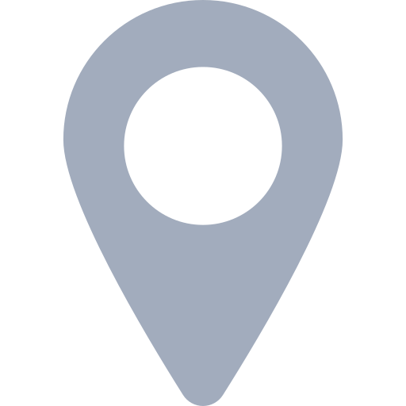

Emanuele Carfì, dottore in Sviluppo Economico e Cooperazione Internazionale. Aperto a nuove sfide sin da adolescente: all'età di quattordici anni mi sono trasferito a Prato, lontano dagli affetti e dalla sicurezza di casa. Ciò mi ha aiutato a crescere e a diventare indipendente fin da subito.
Durante il percorso universitario ho sviluppato conoscenze nel campo della cooperazione e della progettazione per lo sviluppo locale e globale, migliorando le capacità di team working.
Ho svolto il tirocinio presso lo SPRINT (Sportello Regionale per l'Internazionalizzazione) di Palermo, eseguendo analisi SWOT e dei fabbisogni dello sportello. Ho approfittato di questa esperienza per conoscere il contesto delle fiere internazionali e dei piani di sviluppo regionale.
Mi ritengo una persona molto capace di adattarsi a diversi contesti sociali e lavorativi, nonostante il mio forte senso critico. Sento di avere acquisito nel corso degli anni ottime capacità comunicative e riesco facilmente a relazionarmi con persone culturalmente anche molto diverse.
09/2014 - 03/2020
Corso triennale di laurea in Sviluppo Economico e Cooperazione Internazionale

Università degli Studi di Palermo (Italia)
- Conoscenze e competenze multidisciplinari nel campo delle scienze sociali, economiche e demoetnoantropologiche
- Conoscenze e tecniche di interventi di cooperazione e sviluppo economico nelle aree, a vario titolo, definite depresse o a ritardo di sviluppo
- Studio del PCM - Project Cycle Management
- Analisi delle relazioni sociali da un punto di vista multidisciplinare (sociologico, economico, psicologico, antropologico, demografico)
Inglese: B2; Spagnolo: B1
14/03/2017 - 18/03/2017
Attestato di partecipazione
Europacube Innovation Business School, Palermo (Italia)
- Acquisite competenze nel campo dell'europrogettazione
- Aumentata conoscenza e capacità nel PCM (Project Cycle Managent)
- Aumentata consapevolezza delle logiche gestionali di un progetto a 360°
- Acquisita conoscenz delle principali linee di finanziamento europee e dei relativi ambiti
- Consolidata esperienza nella stesura e monitoraggio di un progetto
09/2008 - 09/2013
Diploma di maturità classica-europea
Convitto Nazionale Statale Francesco Cicognini, Prato (Italia)
Tedesco: A1